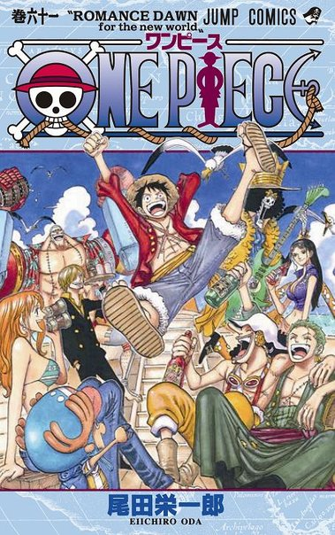

|  |
中文名字：海賊王 原版名稱：ONE PIECE（ワンピース） 作者：尾田榮一郎 類型：少年漫畫 地區：日本 出版社：集英社 出版期間：1997年12月至今 連載期間：連載中 《ONE PIECE》（海賊王、航海王）簡稱“OP”，是日本漫畫家尾田榮一郎作畫的少年漫畫作品。在《周刊少年Jump》1997年34號開始連載。描寫了擁有橡皮身體戴草帽的青年路飛，以成為“海賊王”為目標和同伴在大海展開冒險的故事。 截止至2013年11月，發行量在全世界突破3.45億冊，是全世界發行量最高的日本漫畫。 漫畫單行本的翻譯版本在日本以外有30個以上的國家和地區出版發行。相關商品在2012年度的市場規模約達1000億日元。 2012年在第41回日本漫畫家協會上獲得大賞。 2015年6月15日，《ONE PIECE》以日本本土累計發行了3億2086萬6000本，被吉尼斯世界紀錄官方認證為“世界上發行量最高的單一作者創作的系列漫畫”。 |